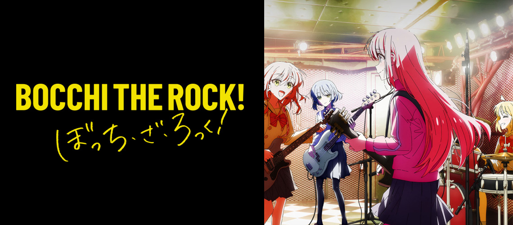

Guitarra solo
Hitori “Bocchi” Gotoh
Famosa no YouTube como “guitarhero”, travada em qualquer conversa com mais de uma pessoa.

Anime · 2022 · CloverWorks
Hitori Gotoh toca guitarra como gente grande, mas mal consegue dizer “oi”. Até que a Nijika a arrasta para o palco, e a Kessoku Band começa.

01Sinopse
A história gira em torno de Hitori Gotoh, apelidada de “Bocchi”, uma garota solitária que adora tocar guitarra e passa os dias tocando sozinha em casa. Por acaso, ela acaba entrando na Kessoku Band, liderada pela baterista Nijika Ijichi.
No palco ela ainda treme, mas aos poucos descobre que tocar em grupo pode ser bem menos assustador do que parece.
Trailer oficial Crunchyroll Brasil
02A banda
Quatro garotas, uma casa de shows em Shimokitazawa e uma quantidade preocupante de ansiedade social.
Famosa no YouTube como “guitarhero”, travada em qualquer conversa com mais de uma pessoa.
Calada, excêntrica e sempre sem dinheiro. Compõe as músicas da banda, e pede emprestado para o almoço.
Líder e coração da banda. A irmã mais velha, Seika, é dona da casa de shows STARRY.
A extrovertida da turma. Entrou na banda sem saber tocar e aprendeu guitarra com a própria Bocchi.